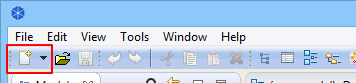
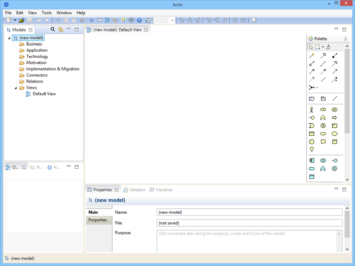

Pour créer un nouveau modèle vierge ArchiMate dans Archi, procédez comme suit:
Choisissez "Modèle vierge" dans le menu "Fichier->Nouveau" ou via le bouton de la barre d'outils principale:
Le bouton "Nouveau"
Un modèle intitulé "(Nouveau modèle)" est créé et apparaît dans la fenêtre de l'arborescence des modèles tandis que s'ouvre la "vue par défaut" contenant un canevas de dessin vide et une palette:
L'espace de travail par défaut d'Archi contenu le nouveau modèle créé
Notez que le modèle est nommé "(nouveau modèle)" par défaut. Vous pouvez modifier ceci en le renommant directement dans l'arborescence des modèles ou en le choisissant dans l'arborescence des modèles et en modifiant son nom dans la fenêtre des propriétés. Vous pouvez également ajouter ici un "objectif" via la fenêtre des prorpiétés en décrivant l'objectif et les buts de ce modèle.
Notez également qu'une "vue" a été automatiquement créée pour le modèle, qu'elle s'appelle "Vue par défaut" et qu'elle se trouve dans le dossier "Vues" de l'arborescence du modèle. Si l'arborescence n'est pas ouverte (i.e. visible avec son canevas de dessin vierge et sa palette), vous pouvez l'ouvrir en double-cliquant sur elle dans l'arborescence du modèle. En faisant cela, vous ouvrirez également l'éditeur de vue (diagramme) situé sur la droite. Si vous souhaitez renommer la vue, choisissez la simplement dans l'arborescence du modèle puis modifiez son nom dans la fenêtre des propriétés.
La fenêtre des modèles peut afficher plus qu'une seule aborescence des Modèles ce qui signifie que vous pouvez travailler sur plus d'un modèle à la fois.
L'astérisque qui apparaît sur un modèle dans l'arborescence quand des modifications ont été réalisées indique que ce modèle a été modifié mais que ces modifications n'ont pas encore été enregistrées.